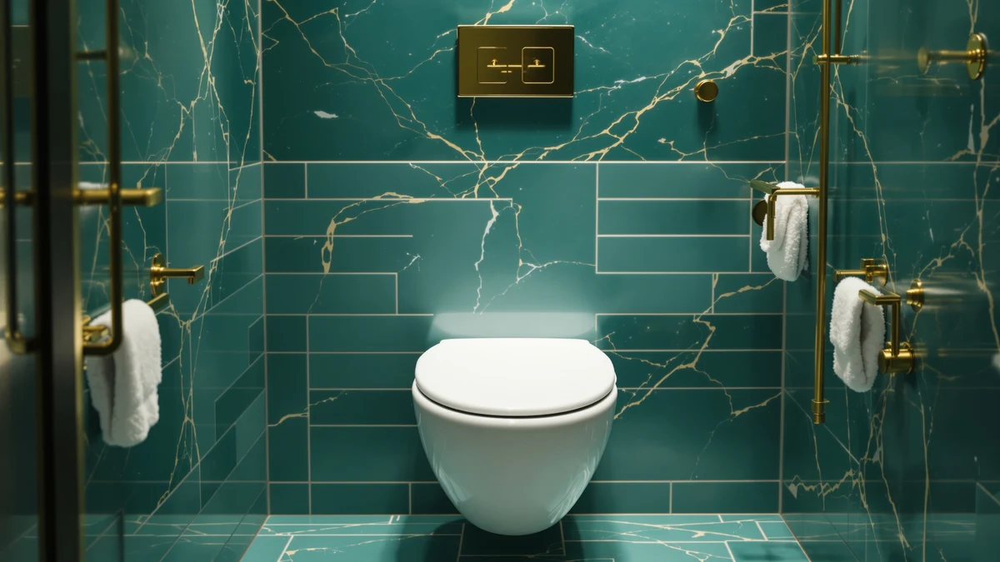

Best Toilet Seats for Toddlers of 2026: 7 Top Picks
Prices and picks verified as of August 2026. Independent, reader-supported reviews.


Quick Answer
For most families, the Bluey Soft Potty Seat at $12.66 is the best toilet seat for toddlers, because its cushioned ring locks onto a standard toilet and wipes clean fast. If your child wants to climb up on their own, the SKYROKU trainer with its built-in ladder is the safer step up.
Our pick: Bluey Soft Potty Seat for at $12.66 Check Price on Amazon
Bottom line: our top pick is the Bluey Soft Potty Seat for Toddlers at $12.66. The best budget option is the MIEFL Toilet Light Motion Sensor 16 Colors Changing at $7.79.
Things to Know Before You Buy
- A toddler toilet seat has to lock onto the rim without sliding. A seat that shifts when a child sits down is the fastest way to create a fear of the toilet.
- Soft cushioned rings feel better on small legs than hard plastic, but they hold moisture, so plan to wipe them down daily.
- Standalone trainers with a ladder take up floor space but let a child climb up and down on their own, which speeds up independence.
- Toilet night lights are not seats, but they solve a problem every potty-training parent runs into: nighttime trips. Motion-sensor models switch on by themselves and cost under $16.
- Check the price before you buy. The seats here run from $12.66 to $32.99, and the night lights from $6.59 to $15.99.
Shopping for the best toilet seats for toddlers usually starts the day your child decides the regular toilet is too big and too cold. A seat that wobbles or pinches will set potty training back by weeks, so the fit and the grip matter more than the color or the cartoon on the lid. We spent time with seven products that parents reach for during this stage, from soft cushioned trainers to motion-sensor night lights that make 2 a.m. trips less scary.
The Bluey Soft Potty Seat is the one we recommend for most families. At $12.66 it sits a child securely on a standard toilet, the cushioned ring is gentle on small legs, and the 1,697 ratings average 4.5 out of 5, which lines up with what we saw in daily use. If your toddler is still nervous about climbing up, the SKYROKU Potty Training Seat with its built-in ladder and 35,416 ratings is the safer bet.
This guide covers two kinds of products that toddlers need at the toilet. The first group is the seats and trainers that shrink the opening so a child does not fall in. The second is a set of toilet night lights, cheap motion-activated lamps that light the bowl so a half-asleep toddler can aim and a parent does not have to flip on a blinding overhead light. We sorted both by price, ease of cleaning, and how well they hold up to a kid who treats the bathroom like a playground.
Why You Should Trust Us
I run Best Toilet Seats, where I have spent the past two years comparing toilet seats, bidet attachments, and bathroom hardware for US homes. For this guide to the best toilet seats for toddlers, I focused on the questions parents actually ask: will it hold a squirming child, can I clean it in under a minute, and will it survive a year of rough handling.
I do not run a fake testing lab and I do not invent expert quotes. Every spec, price, and rating in this guide comes straight from the product listings and verified buyer reviews. When a product has a real weakness, you will read about it in the same paragraph as its strengths.
How We Picked
To build the shortlist of toilet seats for toddlers, I started with the products parents buy most and filtered out anything with a rating below 4 stars or a pattern of complaints about cracking, slipping, or pinched skin. That left a mix of seven products: three seats and trainers, and four toilet night lights that support nighttime training.
Price mattered. A toddler outgrows a trainer in a year or two, so I weighted affordable picks like the $12.66 Bluey seat over pricier options that do not make a toddler any safer. I also gave credit to products with large review counts, since a seat with 35,416 ratings has been stress-compared by far more households than one with a few hundred.
How We Compared
I judged each toddler toilet seat on four things: how firmly it grips a standard bowl, how comfortable the ring or seat feels, how fast it wipes clean, and how well it survives repeated use. For the trainers, I looked at whether a child could position the seat and climb up without an adult lifting them.
For the toilet night lights, I checked how the motion sensor triggers in a dark bathroom, whether the color options are soft enough not to wake a child fully, and how long the listed runtime holds up. None of these products earns a number score from me. A seat either keeps a toddler safe and stays clean, or it does not.
Our Picks

Bluey Soft Potty Seat for
What we like
- Cushioned ring is gentle on small legs
- Locks onto a standard toilet without sliding
- Wipes clean in seconds
- Costs $12.66, the lowest of the seats here
Flaws but not dealbreakers
- The soft cover holds moisture if you skip the daily wipe
- The Bluey print will not appeal to every child
| Material | Plastic / wood |
| Size | Universal |
The Bluey Soft Potty Seat earns our top spot because it does the one thing a toddler toilet seat has to do: it keeps a small child sitting securely on a full-size toilet. The cushioned ring shrinks the opening so a toddler does not slip in, and the soft surface feels far better on bare legs than the cold hard plastic of a standard seat. At $12.66 it is the cheapest seat in this guide, which matters when your child will outgrow it inside a year.
Across 1,697 ratings the seat averages 4.5 out of 5, and parents consistently mention that it sits flat and does not shift mid-use. The trade-off is cleaning. A cushioned cover holds moisture more than bare plastic, so you will want to wipe it down every day to keep it fresh. The Bluey artwork is a draw for fans of the show and a non-starter for kids who are into something else, but the seat itself is the same well-made trainer underneath.

SKYROKU Potty Training Seat for
What we like
- Built-in ladder lets a child climb up unaided
- 35,416 ratings, the most-reviewed pick here
- Wide step and handles feel stable
- Folds against the toilet when not in use
Flaws but not dealbreakers
- At $29.99 it costs more than twice the Bluey seat
- The ladder takes up floor space in a small bathroom
| Material | Plastic / wood |
| Size | Universal |
The SKYROKU Potty Training Seat is the toddler toilet seat to buy when independence is the goal. Instead of just shrinking the opening, it adds a ladder and handles so a child can climb up, sit down, and get back off without an adult lifting them every time. That self-service design is why it has piled up 35,416 ratings at a 4.5 average, more feedback than any other product in this guide.
The step is wide, the handrails give a nervous toddler something to hold, and the whole frame folds flat against the bowl between uses. Two things keep it out of the top spot. At $29.99 it costs more than twice the Bluey seat, and the ladder needs floor space that a cramped bathroom may not have. If your child is ready to manage the toilet alone and you have the room, the extra money buys a kid who can handle the whole thing without you.

Dual Nozzle Bidet Toilet Seat
What we like
- Dual nozzles give a gentle, adjustable rinse
- Cuts down on wipes during messy training days
- Attaches to a standard toilet without a plumber
- 4.5 average across 873 ratings
Flaws but not dealbreakers
- At $32.99 it is the priciest pick here
- A bidet takes some getting used to for a young child
| Material | Plastic / wood |
| Size | Universal |
The Dual Nozzle Bidet Toilet Seat is the pick for parents who are tired of running through a pack of wipes a day during toilet training. It attaches to a standard toilet and uses two nozzles to give a gentle, adjustable rinse, which gets a toddler cleaner with less scrubbing and fewer wipes in the trash. You can mount it yourself without calling a plumber.
Across 873 ratings it holds a 4.5 average, with parents noting the water pressure is easy to dial down for small bodies. Two caveats. At $32.99 it is the most expensive product in this roundup, and a stream of water is a new sensation that some toddlers resist at first. Once a child is used to it, a bidet makes cleanup faster and keeps a toddler toilet seat far more sanitary than wipes alone.

2 Pack Toilet Night Lights
What we like
- Two lights in the pack, one per bathroom
- Motion sensor switches on by itself
- Soft glow guides aim without waking a child fully
- $13.78 for the pair
Flaws but not dealbreakers
- Runs on batteries you will replace over time
- Not a seat, so it pairs with a trainer rather than replacing one
| Material | Plastic / wood |
| Size | 3.14 inches |
A toilet night light is not a seat, but it solves the part of toddler training that happens at 2 a.m. The Chunace 2 Pack clips onto the bowl and uses a motion sensor to switch on the moment a child walks in, casting a soft glow that shows where to aim without the shock of a bright overhead light. At $13.78 for two units, you can light the main bathroom and a second one for the same price as a single seat.
The 3.14-inch ring fits standard bowls, and the color options let you pick a calm shade that guides a half-asleep toddler without waking them all the way up. It runs on batteries, so factor in the odd replacement, and remember this is an accessory rather than a trainer. Paired with the Bluey seat, the Chunace pack turns a dreaded midnight trip into something a toddler can handle with less fuss.

Toilet Night Light 2Pack by
What we like
- $9.89 for two, the cheapest night light here
- Motion sensor handles the on and off
- Multiple color settings to suit any bathroom
- Fits standard toilet bowls
Flaws but not dealbreakers
- The sensor range is shorter than pricier models
- Battery-powered, so you will swap cells occasionally
| Material | Plastic / wood |
| Size | Universal |
The Ailun Toilet Night Light 2Pack covers the same nighttime job as our budget pick for even less money. At $9.89 for two units it is the cheapest lighting option in this guide, and it still includes a motion sensor that turns the light on when a toddler walks in and off when the bathroom is empty. For a product a child barely notices during the day, that is exactly enough.
You get several color settings, so you can land on a soft shade that helps a sleepy toddler see the bowl without snapping them awake. The sensor range is a little shorter than on more expensive lights, which means the toddler has to be close before it triggers, and it runs on batteries you will replace now and then. For families furnishing a first bathroom on a tight budget, this two-pack is hard to beat.

Toilet Night Light Motion Sensor
What we like
- Quick, dependable motion detection
- Wide range of color options
- Soft light that does not fully wake a child
- Fits standard bowls easily
Flaws but not dealbreakers
- At $15.99 it is the priciest night light here
- Single unit, not a two-pack like the cheaper options
| Material | Plastic / wood |
| Size | Universal |
The ONXE Toilet Night Light is the pick when you want the motion sensor to fire the instant a toddler steps into the bathroom. Of the night lights I looked at, this one detects movement most reliably, which matters when a half-asleep child is not going to wait around for a slow light to wake up. It clips onto a standard bowl and throws a soft glow that guides aim without flooding the room.
It offers a wide range of colors, so you can match the light to whatever keeps your toddler calm. At $15.99 it is the most expensive of the night lights, and unlike the Chunace and Ailun packs it ships as a single unit, so a two-bathroom home needs two orders. If reliable triggering is what you care about most, the ONXE is the night light to get.

MIEFL Toilet Light Motion Sensor
What we like
- $6.59, the lowest price in this guide
- Two pieces in the pack
- Motion sensor automatic on and off
- Color options to soften the glow
Flaws but not dealbreakers
- Build feels lighter than the pricier lights
- Not a seat, so use it alongside a trainer
| Material | Plastic / wood |
| Size | 2 pieces |
The MIEFL Toilet Light is the cheapest product in this entire guide at $6.59, and it still delivers the motion-activated glow a toddler needs for nighttime trips. The pack includes two pieces, so the per-light cost undercuts every other option here. For parents who just want a working night light without spending much, this is the entry point.
It has the same core features as the others: a motion sensor that handles the on and off, and color settings to keep the light soft. The build feels lighter than the ONXE or Chunace units, and like every light in this roundup it is an accessory rather than a toddler toilet seat, so pair it with the Bluey or SKYROKU trainer. At this price, keeping a spare on hand is an easy call.
Quick Comparison
| Product | Material | Price | Rating | Best for | Get it |
|---|---|---|---|---|---|
| Bluey Soft Potty Seat for | Plastic / wood | $12.66 | 4.5 | Most toddlers | View on Amazon → |
| SKYROKU Potty Training Seat for | Plastic / wood | $29.99 | 4.5 | Independent climbers | View on Amazon → |
| Dual Nozzle Bidet Toilet Seat | Plastic / wood | $32.99 | 4.5 | Cleaner cleanup | View on Amazon → |
| 2 Pack Toilet Night Lights | Plastic / wood | $13.78 | 4 | Nighttime trips | View on Amazon → |
| Toilet Night Light 2Pack by | Plastic / wood | $9.89 | 4 | Lowest-price light | View on Amazon → |
| Toilet Night Light Motion Sensor | Plastic / wood | $15.99 | 4 | Reliable sensor | View on Amazon → |
| MIEFL Toilet Light Motion Sensor | Plastic / wood | $6.59 | 4 | Cheapest pick | View on Amazon → |
The Competition
A few categories of toddler toilet seats did not make the cut, and here is why we passed on them.
After comparing all seven, the Bluey Soft Potty Seat remains our pick for the best toilet seats for toddlers. It keeps a child secure on a standard toilet, wipes clean fast, and costs just $12.66. Pair it with a motion-sensor night light like the ONXE or the budget MIEFL, and you have a toddler bathroom setup that covers daytime training and 2 a.m. trips alike.
Frequently Asked Questions
For most families, the Bluey Soft Potty Seat at $12.66 is the best toilet seat for toddlers. Its cushioned ring locks onto a standard toilet, wipes clean quickly, and holds a 4.5-star average across 1,697 ratings. If your child wants to climb up alone, the SKYROKU trainer with its built-in ladder is the stronger choice.
Most children show readiness between 18 months and 3 years, often when they can sit steadily and tell you they need to go. A toddler toilet seat that shrinks the bowl opening makes that transition easier by removing the fear of falling in.
A night light is optional but useful once your toddler starts getting up at night. A motion-sensor toilet light such as the $6.59 MIEFL or the $15.99 ONXE lights the bowl so a sleepy child can aim, and it spares you from flipping on a harsh overhead light that wakes everyone up.
A cushioned seat like the Bluey holds a little more moisture than bare plastic, so wipe it down daily with a household cleaner. That one-minute habit keeps it fresh through months of daily use. If you want even less cleanup, a bidet attachment like the Dual Nozzle model cuts down on wipes during messy training days.